Galerie
Bart je černý kocour venkovského původu. Rád spí a jí. V této galerii je popsán jeho život.
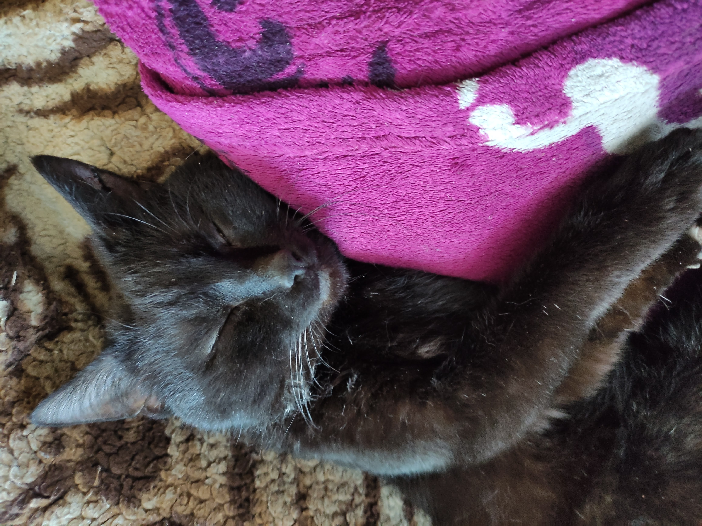 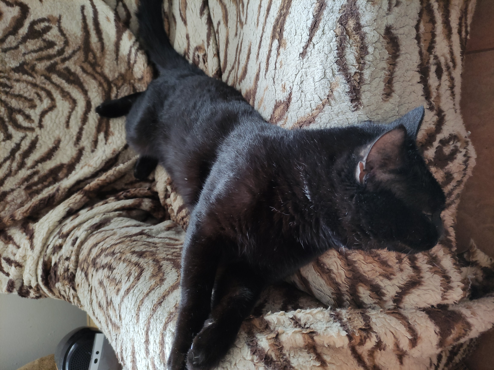 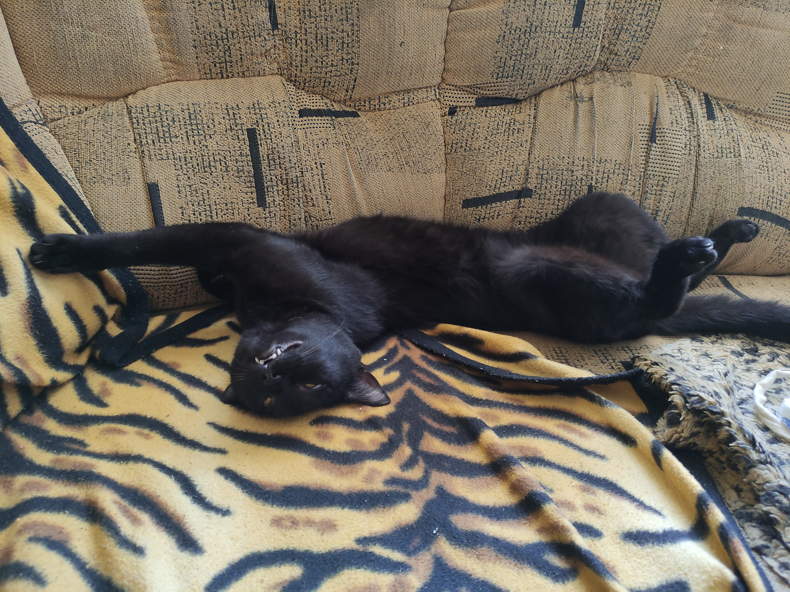 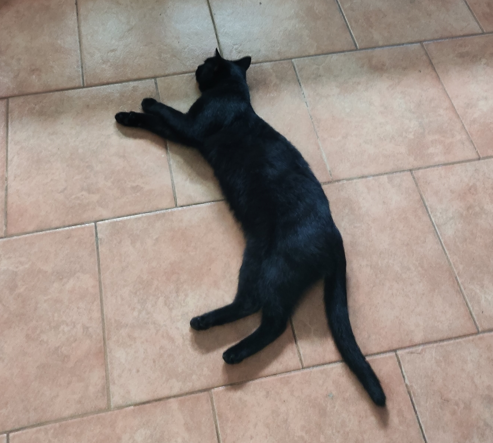 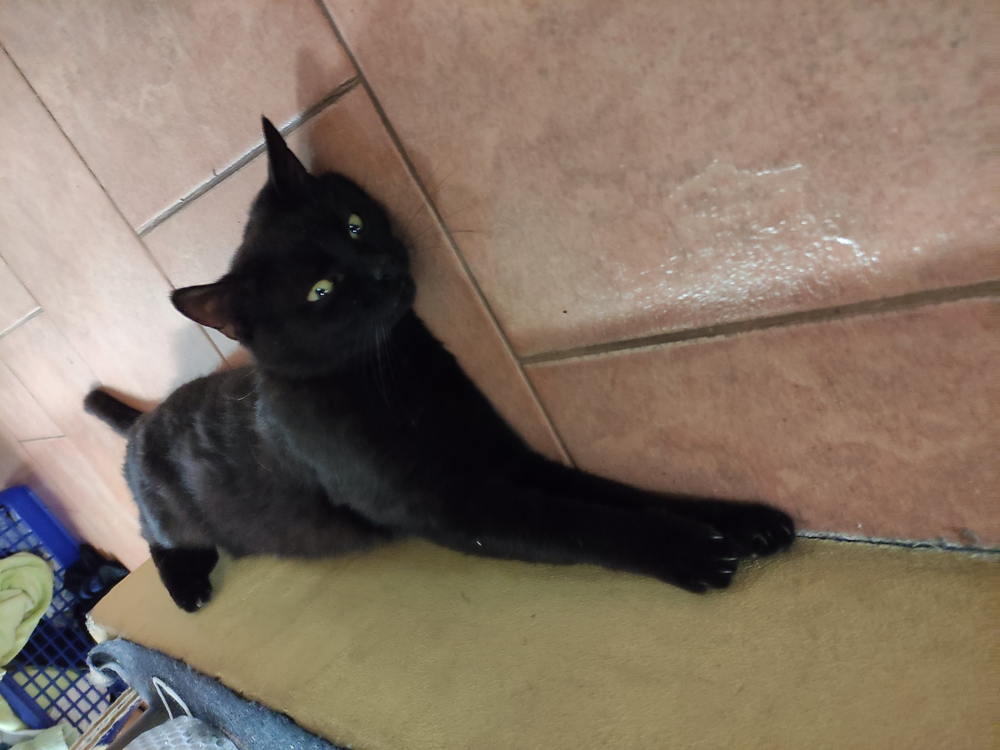 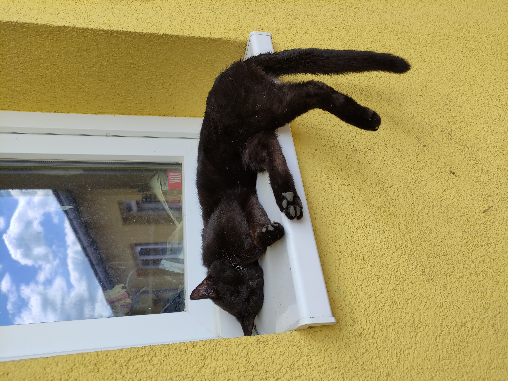
back to top
Felis silvestris catus
Kobylí, kdekoliv
Bart je černý kocour venkovského původu. Rád spí a jí. V této galerii je popsán jeho život.
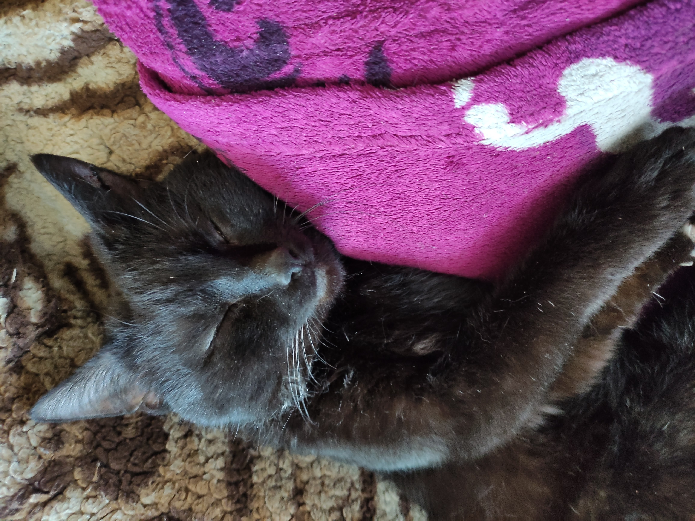 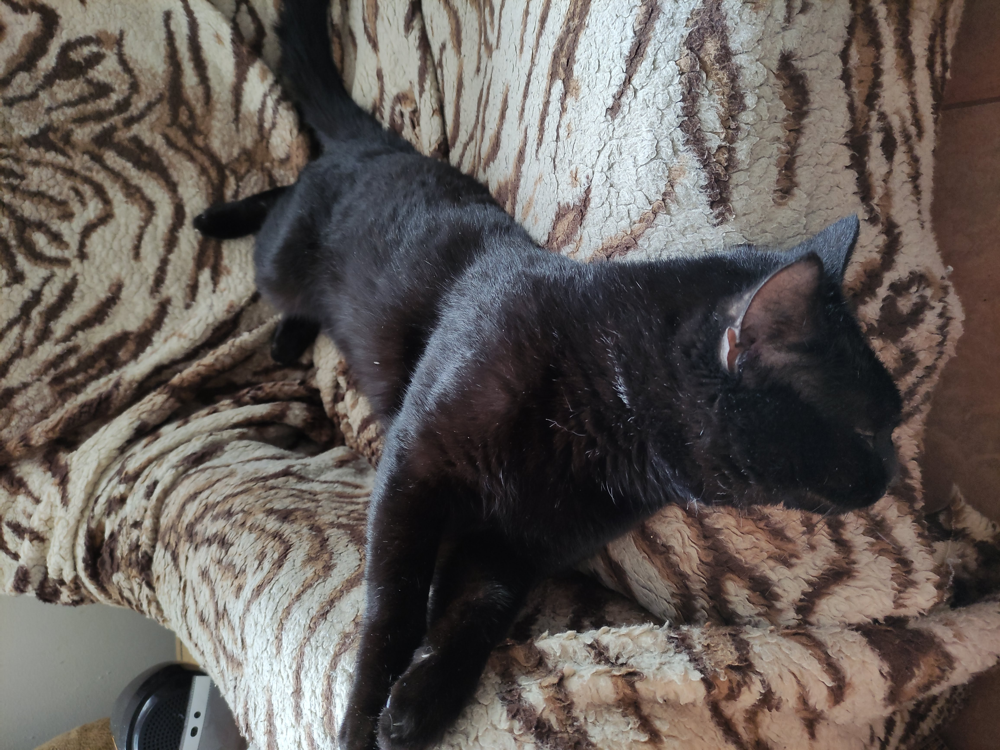 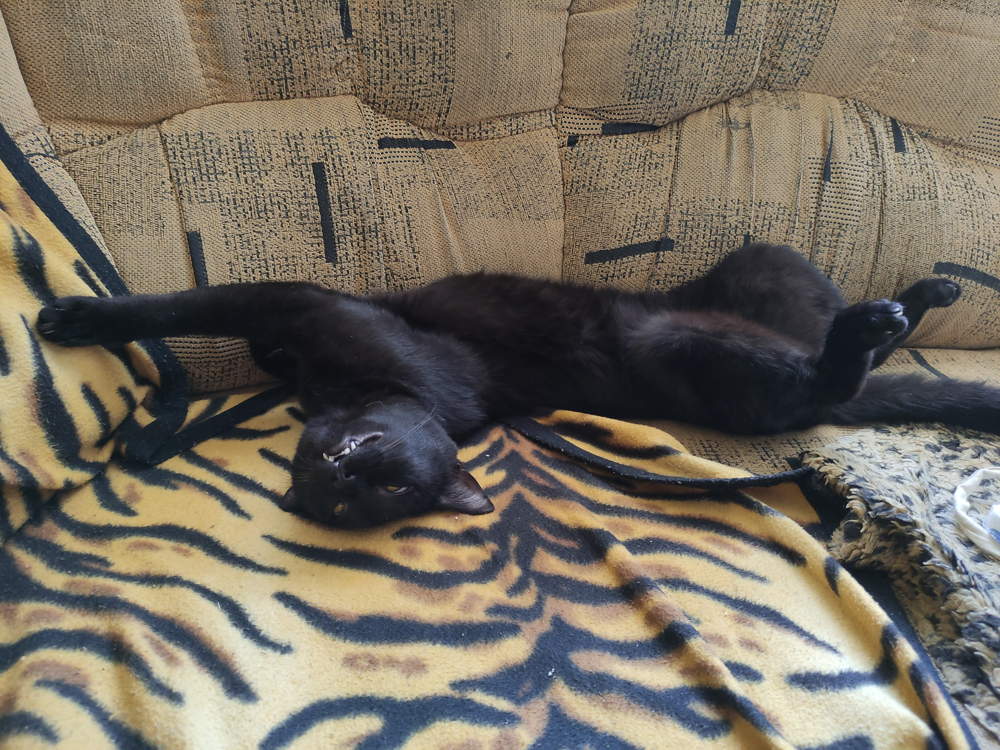 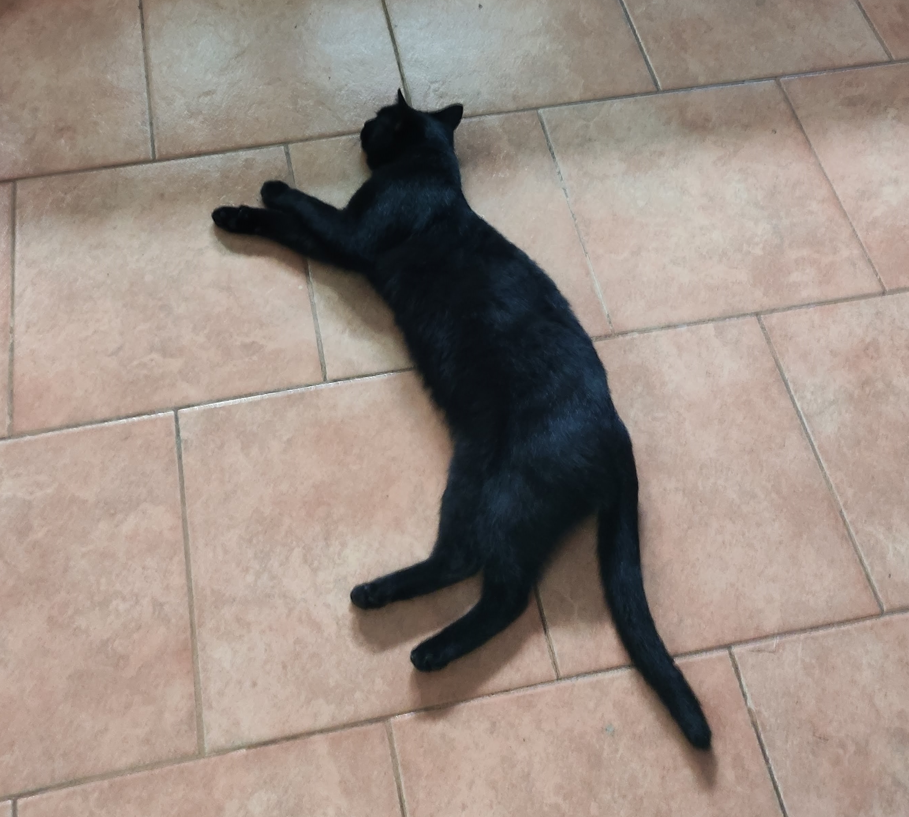 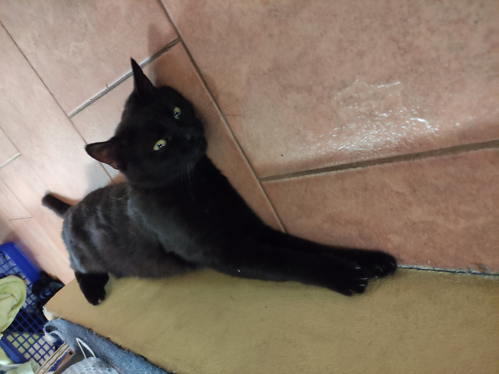 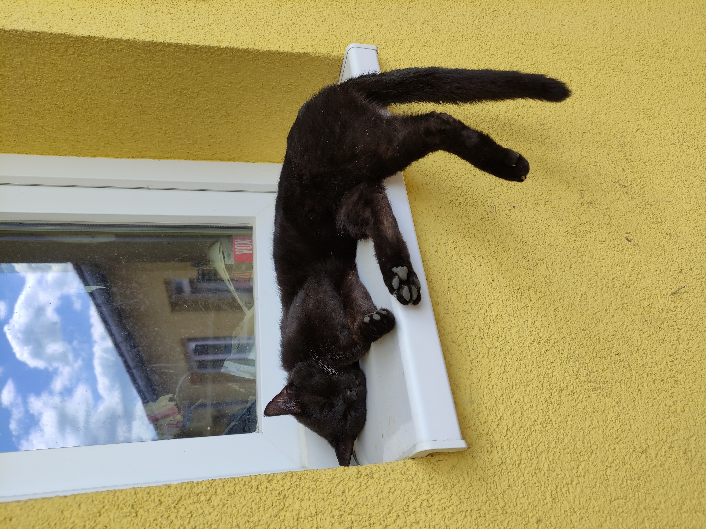
back to top